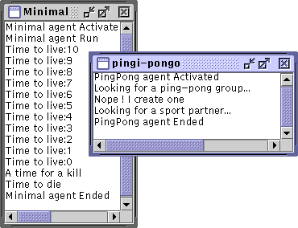

Figure 2. The minimal agent and its breed

This examples exhibits the basic MadKit agent lifecycle, and shows how to launch or kill other agents.
Just launch it ! It will print messages upon activation and run, and launch another agent (a Ping-Pong instance) after 10 seconds delay, and then terminates it.
Two notable security restrictions: you can kill an agent from another only if you are the agent which created it. Another fact about the MadKit agent lifecycle: you can use agent-related calls in an agent only after this agent has been launched (and thus registered in the kernel). This means that for instance, you cannot use message passing, or group & role manipulation in the agent class constructor. You must use the calls only in the activate(), run() or end().